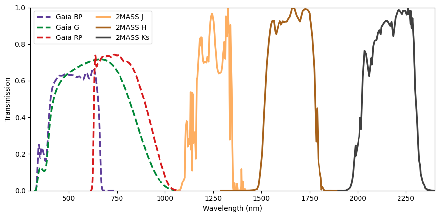
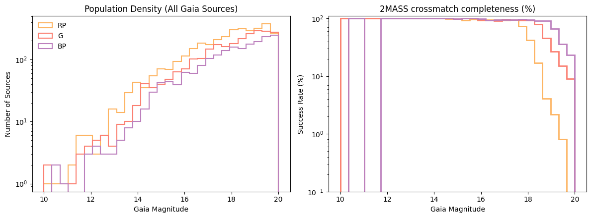
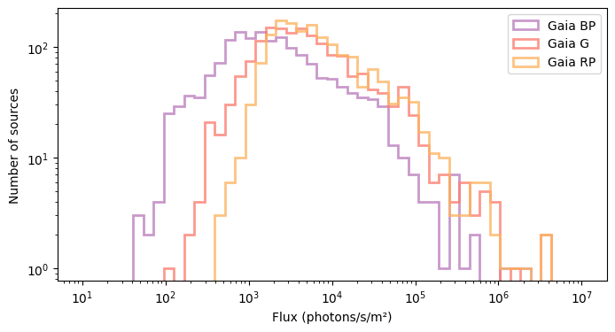
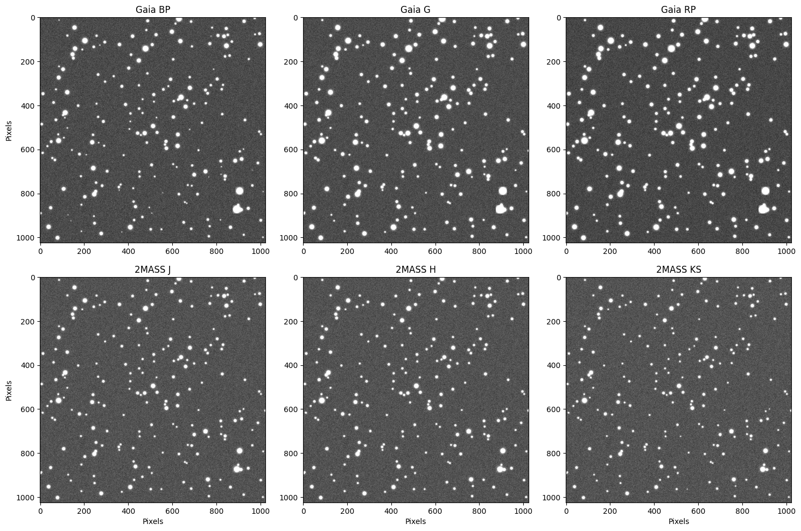
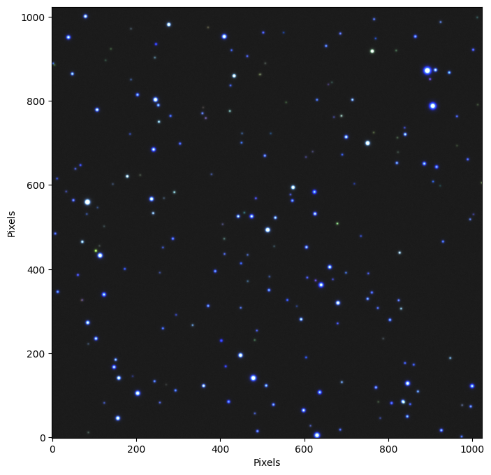

Multi-band Queries#
cabaret can fetch several photometric bands in a single TAP query using
GaiaQuery.get_flux_table().
from astropy.coordinates import SkyCoord
import cabaret
# center = SkyCoord(ra=10.68458, dec=41.26917, unit="deg") # M31 field
center = SkyCoord(ra=90.0, dec=28.0, unit="deg") # Galactic anti-center
table = cabaret.GaiaQuery.get_flux_table(
center,
radius=0.15,
filter_bands="all",
timeout=60,
keep_mag=True, # keep magnitude column
allow_nulls=True,
)
print(table.colnames)
print(f"{len(table)} sources retrieved")
['ra', 'dec', 'pmra', 'pmdec', 'phot_g_mean_mag', 'phot_bp_mean_mag', 'phot_rp_mean_mag', 'j_m', 'h_m', 'ks_m', 'g_flux', 'bp_flux', 'rp_flux', 'j_flux', 'h_flux', 'ks_flux']
1637 sources retrieved
By setting filter_bands="all", we have performed an automated cross-match between the Gaia DR3 (optical) and 2MASS (near-infrared) catalogs. The resulting table contains 16 columns of astrometric and photometric data, including:
Gaia Bands:
g_flux,bp_flux, andrp_flux(covering roughly 330 to 1050 nm).2MASS Bands:
j_flux,h_flux, andks_flux(covering 1.2 to 2.2 μm).
Catalog completeness & selection bias#
By requiring that every source in this sample has a valid measurement in at least one Gaia and one 2MASS band, we have introduced a color selection bias.
2MASS was a ground-based survey significantly less sensitive than the space-based Gaia mission. To be detected in 2MASS, a star must be either very nearby, intrinsically very bright, or very red. Therefore, we have effectively filtered out faint blue stars (like White Dwarfs) and distant blue giants. Our sample is dominated by M-dwarfs and Red Giants, which emit the vast majority of their light at longer wavelengths.

import numpy as np
complete_table = cabaret.GaiaQuery.get_flux_table(
center,
radius=0.15,
filter_bands=["G", "BP", "RP"],
timeout=60,
allow_nulls=True,
keep_mag=True,
)
has_nan = np.any(
np.isnan(
np.lib.recfunctions.structured_to_unstructured(
np.array(
complete_table[
"phot_g_mean_mag", "phot_bp_mean_mag", "phot_rp_mean_mag"
]
)
)
),
axis=1,
)
print(
f"There are {len(complete_table)} sources for this field in the Gaia catalog, "
f"of which {len(complete_table[~has_nan]) / len(complete_table) * 100:.0f}% have "
f"measurements in all three GAIA bands."
)
There are 3619 sources for this field in the Gaia catalog, of which 96% have measurements in all three GAIA bands.

Population Density (Left): This shows the raw number of detections per band. Notice that RP (orange) detects significantly more faint stars than BP (purple). In this field, many stars are simply too red or too faint to be detected by the Blue Spectrometer at all.
Crossmatch Efficiency (Right): This measures how many Gaia detections have a 2MASS counterpart.
The BP band appears to have the highest completeness because it is the most “exclusive”—it only detects stars bright enough that they are almost guaranteed to be in 2MASS.
The G and RP bands show lower completeness at the faint end because they are sensitive enough to find a “hidden” population of stars that are below the detection threshold of 2MASS.
Generate one simulated image per band#
We build a Sources object for each band from the shared table, then
simulate an exposure. Passing them as an argument bypasses the Gaia query inside generate_image, so all three images are based on exactly the same star list.
observatory = cabaret.Observatory(camera=cabaret.Camera.create_ideal_camera())
# Sorted from shortest wavelength to longest wavelength
sources_names = {
f"Gaia {band}": f"{band.lower()}_flux" for band in ["BP", "G", "RP"]
} | {f"2MASS {band}": f"{band.lower()}_flux" for band in ["J", "H", "KS"]}
sources_dict = {
key: cabaret.Sources.from_arrays(
ra=table["ra"],
dec=table["dec"],
fluxes=table[col],
)
for key, col in sources_names.items()
}
common = dict(ra=center.ra.deg, dec=center.dec.deg, exp_time=30, seed=42)
images = {}
for i, (title, src) in enumerate(sources_dict.items()):
img = observatory.generate_image(**common, sources=src)
images[title.split(" ")[-1]] = img.astype("float")
import matplotlib.pyplot as plt
bins = np.logspace(np.log10(10), np.log10(1e7), 50)
fig, ax = plt.subplots(figsize=(8, 4))
for key, color in zip(
["Gaia BP", "Gaia G", "Gaia RP"], ["#bc80bd", "#fb8072", "#fdb462"]
):
if "2MASS" in key:
continue
ax.hist(
sources_dict[key].fluxes,
bins=bins,
log=True,
alpha=0.8,
label=key,
histtype="step",
color=color,
lw=2,
)
ax.set_xscale("log")
ax.set_xlabel("Flux (photons/s/m²)")
ax.set_ylabel("Number of sources")
ax.legend()
plt.show()

The resulting flux distribution follows a clear spectral logic: \(\mathrm{BP < G < RP}\).
Red Population Bias: By requiring 2MASS counterparts, we have selected a sample dominated by cooler stars (Red Giants and M-dwarfs). These stars naturally peak in the RP band.
The G-Band “Dilution”: While the G-band filter is broad, its sensitivity extends into blue wavelengths where our red-biased sample has little to no emission. This makes the G-band total count lower than the RP band, which is more perfectly aligned with the stars’ output.
Survivor Bias: The BP band shows the lowest flux simply because it is the most distant from the peak emission of our target stars.
import matplotlib.pyplot as plt
from cabaret.plot import plot_image
fig, axes = plt.subplots(2, 3, figsize=(15, 10))
for i, (title, src) in enumerate(sources_dict.items()):
# plot_image handles the "look" of the data automatically
ax = axes.flatten()[i]
plot_image(images[title.split(" ")[-1]], title=title, ax=ax, add_colorbar=False)
if i not in [3, 4, 5]:
ax.set_xlabel("")
if i not in [0, 3, 6]:
ax.set_ylabel("")
plt.tight_layout()

By comparing these panels, we see that some stars appear significantly brighter in some bands than others. This is a direct visual confirmation of the spectral differences in our sample.
Multi-wavelength synthesis (RGB)#
To visualize the full spectral range of our data, we can combine three independent bands into a single false-color composite. We map these bands to the RGB channels in chromatic order—assigning the shortest wavelength to blue and the longest to red:
We map the three bands to colour channels in wavelength order:
G (optical) → Blue
H (near-IR) → Green
KS (near-IR) → Red
In this scheme, blue objects generally represent hotter stars, while deep red objects highlight the coolest M-dwarfs or stars obscured by interstellar dust.
from astropy.visualization import ManualInterval, make_rgb
maximum = 0.0
for img in images.values():
val = np.percentile(img, 99.5)
if val > maximum:
maximum = val
rgb = make_rgb(
image_r=images["KS"], # ~2150 nm, near-IR
image_g=images["H"], # ~1650 nm, near-IR
image_b=images["G"], # ~673 nm, optical
interval=ManualInterval(vmin=0, vmax=maximum),
)
fig, ax = plt.subplots(figsize=(8, 8))
ax.set_xlabel("Pixels")
ax.set_ylabel("Pixels")
_ = ax.imshow(rgb, origin="lower")
